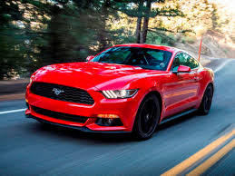
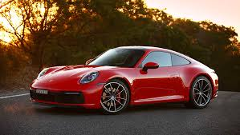
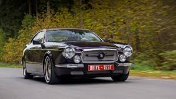

Найти авто
Новости
Какая-то новая Tesla
Маленький заголовок про ТеслуПошлый красный Mustang
 На Хойникском автощоу Alfa Romeo представила совершенно новый хэтчбэк, которого раньше никто не видел. На Хойникском автощоу Alfa Romeo представила совершенно новый хэтчбэк, которого раньше никто не видел. На Хойникском автощоу Alfa Romeo представила совершенно новый хэтчбэк, которого раньше никто не видел.Новый гейский цвет от BMW
На Хойникском автощоу Alfa Romeo представила совершенно новый хэтчбэк, которого раньше никто не виделPorshe выкатило что-то новенькое
 На Хойникском автощоу Alfa Romeo представила совершенно новый хэтчбэк, которого раньше никто не видел.На Хойникском автощоу Alfa Romeo представила совершенно новый хэтчбэк, которого раньше никто не видел.И еще новость о BMW
На Хойникском автощоу Alfa Romeo представила совершенно новый хэтчбэк, которого раньше никто не виделА это какая-то непонятная машина
На Хойникском автощоу Alfa Romeo представила совершенно новый хэтчбэк, которого раньше никто не видел. На Хойникском автощоу Alfa Romeo представила совершенно новый хэтчбэк, которого раньше никто не видел. На Хойникском автощоу Alfa Romeo представила совершенно новый хэтчбэк, которого раньше никто не видел.И дедушка Mercedes
 На Хойникском автощоу Alfa Romeo представила совершенно новый хэтчбэк, которого раньше никто не виделСвежие обзоры автомобилей
Заголовок блока
Метод querySelector ищет первый элемент на странице. Если нужно найти все элементы, отвечающие определённому css-селектору, используем метод querySelectorAll. Методы поиска querySelector и querySelectorAll позволяют решить около 95% задач поиска элемента на веб-странице и охватывают практически все типовые случаи.
Метод querySelector ищет первый элемент на странице. Если нужно найти все элементы, отвечающие определённому css-селектору, используем метод querySelectorAll. Методы поиска querySelector и querySelectorAll позволяют решить около 95% задач поиска элемента на веб-странице и охватывают практически все типовые случаи.
Метод querySelector ищет первый элемент на странице. Если нужно найти все элементы, отвечающие определённому css-селектору, используем метод querySelectorAll. Методы поиска querySelector и querySelectorAll позволяют решить около 95% задач поиска элемента на веб-странице и охватывают практически все типовые случаи.
Метод querySelector ищет первый элемент на странице. Если нужно найти все элементы, отвечающие определённому css-селектору, используем метод querySelectorAll. Методы поиска querySelector и querySelectorAll позволяют решить около 95% задач поиска элемента на веб-странице и охватывают практически все типовые случаи.
Метод querySelector ищет первый элемент на странице. Если нужно найти все элементы, отвечающие определённому css-селектору, используем метод querySelectorAll. Методы поиска querySelector и querySelectorAll позволяют решить около 95% задач поиска элемента на веб-странице и охватывают практически все типовые случаи.